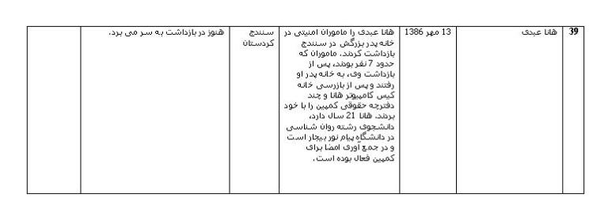

در حالی که بیش از یکصد سال از آغاز فعالیت های زنان برای احقاق حقوق ابتدایی شان می گذرد، جنبش زنان همچنان روزهای پرتنشی را طی می کند. در سال های گذشته با توجه به فضای محدود جامعه و عدم وجود سخنگاه برای پرداختن به مطالبات زنان، آنها از فرصت هایی چون هشتم مارس، روز جهانی زن و بیست و دوم خرداد ماه برای به خیابان آوردن خواست ها و عمومی کردن شان استفاده کرده و دست به تجمعات آرامی زدند. تجمعاتی که اگرچه مطابق با اصل 22 قانون اساسی، آزاد و مجاز است اما با برخوردهای شدید نیروی انتظامی مواجه شد. به گونه ای که بسیاری مورد ضرب و شتم قرار گرفته و بازداشت شدند. این افراد بعد از گذران چند روز در بند 209 اوین، با وثیقه های سنگین آزاد شدند.
اما این روند متوقف نشد و دستگیری فعالان جنبش زنان در سیزدهم اسفند ماه شکل جنجالی تر به خود گرفت. جمعی از زنان که برای اعتراض به دادگاه در حال اجرای بازداشت شدگان 22 خرداد مقابل دادگاه انقلاب گرد هم آمده بودند با برخورد شدید نیروی انتظامی مواجه شده و بازداشت شدند. "نوشین احمدی خراسانی- پروین اردلان- ناهید کشاورز- محبوبه حسین زاده- محبوبه عباسقلی زاده- نیلوفر گلکار- پرستو دوکوهکی- مریم میرزا- مریم حسین خواه- ناهید جعفری- مینو مرتاضی- فاطمه گوارایی- شهلا انتصاری- سوسن طهماسبی- آزاده فرقانی- ژیلا بنی یعقوب- ناهید انتصاری-آسیه امینی- شادی صدر- ساقی لقایی- ساغر لقایی- الناز انصاری- سارا ایمانیان- جلوه جواهری- زارا امجدیان- زینب پیغمبرزاده - نسرین افضلی- مهناز محمدی- سمیه فرید- فریده انتصاری- رضوان مقدم- سارا لقمانی" به بند 209 زندان اوین منتقل و بعد از مدتی با وثیقه های سنگین آزاد شدند.
چند روز بعد در تجمع هشتم مارس، مارال فرخی، گیتا احمدی، مونا فیاض بخش٬ ناهید نوروزی و سمانه مرادیانی نیز بازداشت و روز بعد پس از گذران يك شب در بازداشتگاه وزرا، با قید ضمانت آزاد شدند.
از طرفی دیگر، قدرت که راه هر گفتمانی را مسدود کرده است، حرکت های مدنی چون کمپین یک میلیون امضا علیه قوانین تبعیض آمیز را نیز تاب نیاورده و فعالان مربوطه به طور مداوم مورد تهدید، بازداشت و بازجویی قرار می گیرند. چنانکه روند بازداشت کمپینی ها همچنان ادامه دارد. روناک صفارزاده، گرافیست و فعال در حوزه زنان و عضو انجمن زنان آذرمهر كردستان که به همراه هانا در روز جهانی کودک، در سنندج به جمع آوری امضا برای کمپین مشغول بودند، از آخرین بازداشت شدگان هستند. روناک مدت طولانی ست که در بند است و نه تنها از وی خبری به خانواده اش نمی دهند بلکه در مقابل پرس و جوهای آن ها، مادر را مورد ضرب و شتم قرار می دهند.
احکام صادره برای فعالان زن، جامعه ی جهانی را به شگفت آورده است. فعالیت های مدنی عمدتا نقدی بر سیاست گذاری های دولتمردان است که توجه به چنین انتقاداتی می تواند در جهت بهبود روند برنامه های دولت تاثیری مثبت داشته باشد. اما احکام مزبور گویای حقیقتی دیگر است: زنان سهمی از حقوق شهروندی ندارند.
این روزها نیز از جمله آخرین احکام صادره که اعتراض همگان را برانگیخته است تایید حکم دلارام علی، فعال حقوق کودکان و زنان است که وی را برای مدت دو سال و شش ماه به زندان و ده ضربه شلاق محکوم کرده اند. کارنامه ی دلارام علی، مددکار جوان 24 ساله، گویای فعالیت های انسان دوستانه ی وی است. او که به معنای واقعی مددکاری را تجربه ی عملی کرده است، به میان کودکان و زنان پامنار و امامزاده یحیی و ناصر خسرو و سایر مناطق جنوبی تهران می رود. وی علاوه بر پیگیری وضعیت خانواده ها و کودکان، به برگزاری کارگاه های آموزشی کاهش خشونت، مبارزه با ایدز و موارد دیگر می پردازد. دلارام در زلزله ی بم به کمک زنان و کودکان زلزله زده شتافت و در بحرانی ترین شرایط کمک های درخور توجه ای به آنها نمود. او همچنین با پا گرفتن کمپین یک میلیون امضا، فعالیت خود را در این راستا آغاز کرده و همراه سایر کمپینی ها برای احقاق حقوق زنان تلاش می کند. و البته در مقابل تمامی خدمات اجتماعی که به صورت داوطلبانه انجام می دهد، زندان و ضربات شلاق نصیبش شده است.
دل آرام علی، تنها زنی نبود که حکم شلاق برایش صادر شد، عالیه اقدام دوست نیز که در 22 خرداد 1385 بازداشت شد به جرم شرکت در تجمع غیر قانونی مطالبات زنان و بر هم زدن نظم عمومی به سه سال و چهار ماه حبس و بیست ضربه شلاق محکوم شد.
در ماه گذشته دادگاه بسیاری از افراد بازداشت شده برگزار و یا قرار دادگاه برای ماه های آتی تعیین شده است.
فشار و ایجاد ارعاب از سوی حکومت نه تنها از میزان خود نکاسته که بر آن نیز افزوده است. اما در کنار آن روز به روز با بالاتر رفتن سطح آگاهی زنان نسبت به حقوقشان، بر تعداد فعالان افزوده می شود.
در جدول زیر سعی شده با بررسی وضعیت پرونده های فعالان کمپین یک میلیون امضا، تصویری از فضای موجود ترسیم شود. پرونده های مزبور همچنان در جریان هستند.
